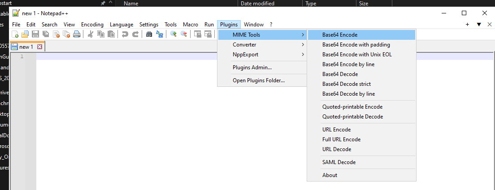

Base64 on Windows Workarounds |
Jacek Kowalczyk |
November 22, 2023 |
https://stackoverflow.com/questions/37046771/base64-encode-string-command-line-windows
echo 21184067-14fa-4ec8-99d6-aea45eef590a | base64
**Git Bash and MSYS2 INCORRECT!!!**
MjExODQwNjctMTRmYS00ZWM4LTk5ZDYtYWVhNDVlZWY1OTBhCg==
online tool:
**https://www.base64encode.org/**
MjExODQwNjctMTRmYS00ZWM4LTk5ZDYtYWVhNDVlZWY1OTBh
powershell "[convert]::ToBase64String([Text.Encoding]::UTF8.GetBytes(\"21184067-14fa-4ec8-99d6-aea45eef590a\"))"
https://plugins.jetbrains.com/plugin/2162-string-manipulation
# This is a sample Python script.
# Press Shift+F10 to execute it or replace it with your code.
# Press Double Shift to search everywhere for classes, files, tool windows, actions, and settings.
import base64
TEST_STRING = "this is test text to base64 encoding"
def print_hi(name):
# Use a breakpoint in the code line below to debug your script.
print(f'Hi, {name}') # Press Ctrl+F8 to toggle the breakpoint.
def encode(sample_string) :
# sample_string = "GeeksForGeeks is the best"
sample_string_bytes = sample_string.encode("UTF-8")
base64_bytes = base64.b64encode(sample_string_bytes)
base64_string = base64_bytes.decode("UTF-8")
print(f"{sample_string} as Base64 encoded string: {base64_string}")
return base64_string
def decode(base64_string):
import base64
# base64_string = " R2Vla3NGb3JHZWVrcyBpcyB0aGUgYmVzdA =="
base64_bytes = base64_string.encode("UTF-8")
decoded_string_bytes = base64.b64decode(base64_bytes)
decoded_string = decoded_string_bytes.decode("UTF-8")
print(f"Base64: {base64_string} Decoded: {decoded_string}")
return decoded_string
# Press the green button in the gutter to run the script.
if __name__ == '__main__':
print_hi('PyCharm')
encode(TEST_STRING)
Tests for base64 encoding decoding
import unittest
from main import encode
from main import decode
from main import TEST_STRING
class MyTestCase(unittest.TestCase):
def test_encode(self):
self.assertEqual("dGhpcyBpcyB0ZXN0IHRleHQgdG8gYmFzZTY0IGVuY29kaW5n", encode(TEST_STRING)) # add assertion here
def test_encode_dupa(self):
self.assertEqual("ZHVwYQ==", encode("dupa")) # add assertion here
def test_decode(self):
self.assertEqual(TEST_STRING, decode("dGhpcyBpcyB0ZXN0IHRleHQgdG8gYmFzZTY0IGVuY29kaW5n")) # add assertion here
if __name__ == '__main__':
unittest.main()
https://www.baeldung.com/java-base64-encode-and-decode
https://www.baeldung.com/java-base64-encode-and-decode
import java.util.Base64;
public class MyDecoder {
public static String decodeBase64(final String encodedString) {
String decodedString = null;
try{
byte[] decodedBytes = Base64.getDecoder().decode(encodedString);
decodedString = new String(decodedBytes);
} catch (IllegalArgumentException iae) {
log.warn("Input String is not valid Base64, returning original input data", iae);
decodedString = encodedString;
} finally {
return decodedString;
}
}
}
import java.util.Base64;
// Press Shift twice to open the Search Everywhere dialog and type `show whitespaces`,
// then press Enter. You can now see whitespace characters in your code.
// https://www.baeldung.com/java-base64-encode-and-decode
public class MyBase64 {
public static void encodeBase64(String originalInput) {
String encodedString = Base64.getEncoder().encodeToString(originalInput.getBytes());
System.out.println(originalInput + " encoded to Base64: " + encodedString);
}
public static void decodeBase64(String base64String) {
byte [] decodedStringBytes = Base64.getDecoder().decode(base64String);
String decodedString = new String(decodedStringBytes);
System.out.println("Base64: " + base64String + " Decoded: " + decodedString);
}
public static void main(String[] args) {
encodeBase64("gf2koek");
encodeBase64("trudnehaslo");
decodeBase64("dHJ1ZG5laGFzbG8=");
}
}

/